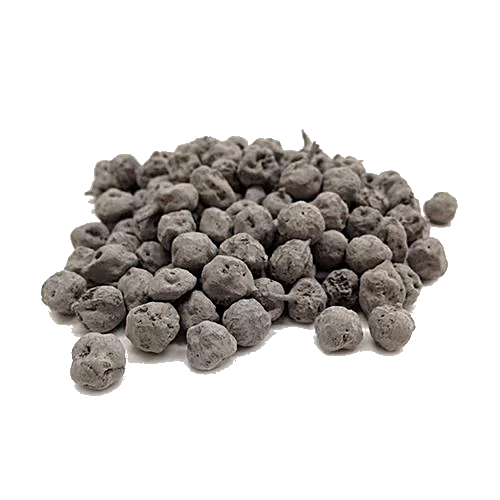

Ingredient
Dried Ker is the dried desert berry of Capparis decidua, also known as Kair. It is sold as a ingredient for dishes where the berry is first rinsed, soaked and cooked before it goes into the final preparation.

Rajasthan special • dried desert berry
Ker, also called Kair, is the small dried berry that gives Rajasthan’s best-known dry preparations their distinctive character. It is prepared before cooking, then used in Ker Sangri, Panchkutta, dry sabzi and pickle.
Product details
Dried Ker is the dried desert berry of Capparis decidua, also known as Kair. It is sold as a ingredient for dishes where the berry is first rinsed, soaked and cooked before it goes into the final preparation.
Ker is commonly used in Ker Sangri, Panchkutta, dry sabzi and pickle recipes. It is not a ready-to-eat spice and it is not the same as Ker Sangri itself; the final dish tells you how it is being prepared.
Final ordering details will be published before this product is available to order. The current price for the 1 kg pack is ₹1,575, and the product should be stored away from moisture in a cool, dry place.
Know the ingredient
Ker or Kair refers to the berry of Capparis decidua, a desert shrub associated with western Rajasthan. For cooking, the berries are commonly dried and prepared again in water before they go into the pan.
Ker Sangri is the familiar Rajasthani dry sabzi built around two main ingredients: Ker berries and Sangri, the dried pods of the khejri tree. Ker itself is not the same thing as Ker Sangri.
Panchkutta or Panchkuta is a separate five-ingredient Rajasthani preparation. Ker is one part of it, alongside four other dried ingredients that can vary by household and recipe.
Dried Ker cooking guide
Dried Ker is not a ready-to-eat snack or a pepper substitute. Its texture and naturally intense character call for rinsing, soaking and cooking before it is added to a Rajasthani preparation.
Soaking and boiling time can vary with the dryness and age of a batch; follow the recipe in front of you and cook until the Ker is properly tender.
Ker Sangri: cook prepared Ker with prepared Sangri and a dry Rajasthani masala base.
Panchkutta: add prepared Ker as one component of the five-ingredient dry preparation.
Dry sabzi: finish the prepared berries in oil with spices, keeping the final dish dry rather than watery.
Pickle: use only a recipe formulated for Ker pickle, with its own salt, oil and storage method.
Ker is also written and searched as Kair, Kair berry, dry Ker, dried Ker, Rajasthani Ker, Rajasthan Kair and Ker Sangri Ker. The ingredient remains the dried desert berry; the surrounding dish or recipe tells you how it is being used.
Keep dry Ker away from moisture. Once the final MarwarMade pack is available, transfer opened contents to a clean, airtight container and store it in a cool, dry cupboard. Always use a dry spoon or dry hand when handling it.
No. Ker is a dried desert berry used in Rajasthani cooking; it should not be confused with black peppercorns.
No. Ker is the berry. Sangri is the dried pod of the khejri tree. Ker Sangri brings the two together in one preparation.
No. Panchkutta is a five-ingredient preparation. Ker is one of its components, not the full mix.
It is generally prepared first by rinsing, soaking and cooking until tender. Use the method specified by your Ker recipe before adding it to the final dish.
It is commonly paired with Sangri, dry Rajasthani masalas, bajra roti and traditional dry preparations. It can also be used in recipes for pickle.